Seylune,
luxury fashion frontend.
A fictional fashion e-commerce site built for a university web development assignment: Sri Lankan-inspired naming, moonlit luxury, curated browsing and a full HTML, CSS and JavaScript shopping interface.
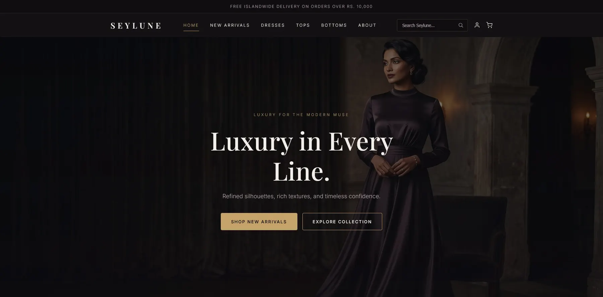
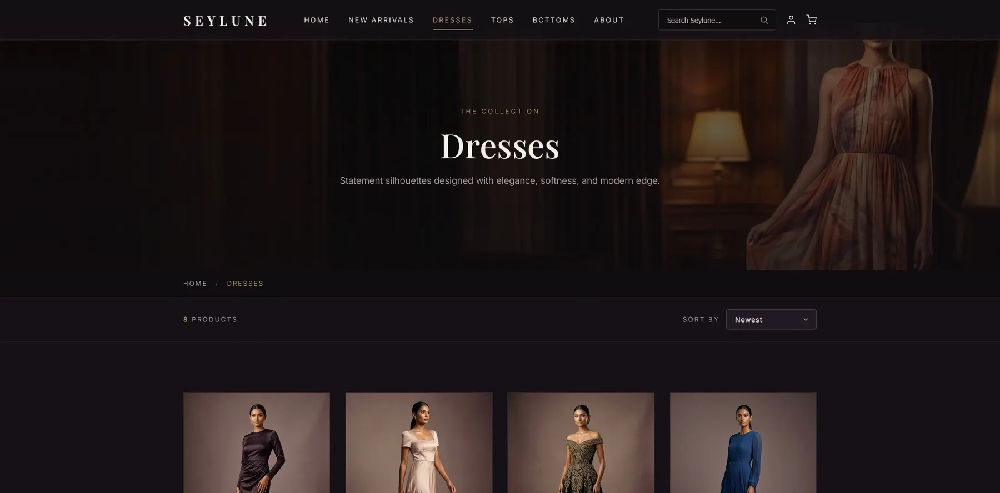
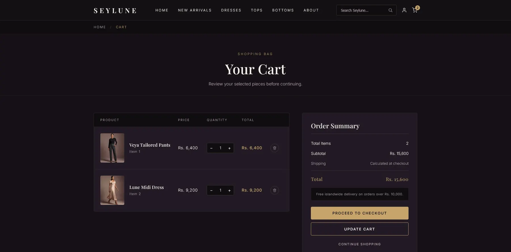
A fictional brand, a real frontend exercise.
The assignment required a company website. We chose fashion because the Joey Clothing project had already given us a head start on categories, visual direction and customer flow.
Seylune is not an existing business. It is a concept brand made for the assignment, focused on frontend structure, page consistency, visual storytelling and a complete browsing experience, without a backend checkout or database.
Academic concept
Invented for the IAD web development group assignment, not presented as a client.
Frontend only
HTML, CSS, JavaScript, responsive browser access and interface interactions.
AI-assisted
Claude helped with code; Gemini and Nano Banana supported model imagery.
Solo final push
The final build, assembly, structure and polish were handled under time pressure.
Sri Lankan, feminine and premium.
The name became the foundation of the visual system: a local hint, a moon reference and a feminine luxury mood.
Seylune
A hint of Ceylon
A soft Sri Lankan connection without being too literal.
The moon
Moon-inspired language for a feminine, elegant, night-luxury feel.
A curated collection
Calm, premium and slightly mysterious, less like a store and more like a collection.
Most fashion sites go white. Seylune went dark.
Dark purple, antique gold, moon tones and interior-style model imagery give it an editorial, limited feel. Motion stays restrained so the brand reads as calm, not noisy.
Premium darkness
The dark base separates Seylune from white fashion stores and makes the gold feel richer.
Generated models
Model visuals created with Gemini and Nano Banana, in premium interiors.
No animation noise
Controlled motion keeps it luxury editorial rather than playful.
Planned eight pages. Shipped twelve.
Home, New Arrivals, Dresses, Tops, Bottoms, Cart, Account, About, Search Results and three product detail pages.
Enter
The homepage sets the brand mood and the limited collection.
Browse
Curated categories feel selective, not overwhelming.
Inspect
Product pages support a closer look at each item.
Support
Search, cart, account and about complete the shell.
A home page that works like a brand entrance.
It introduces the brand, the moon identity, selected collections and the atmosphere before pushing anyone into a category.
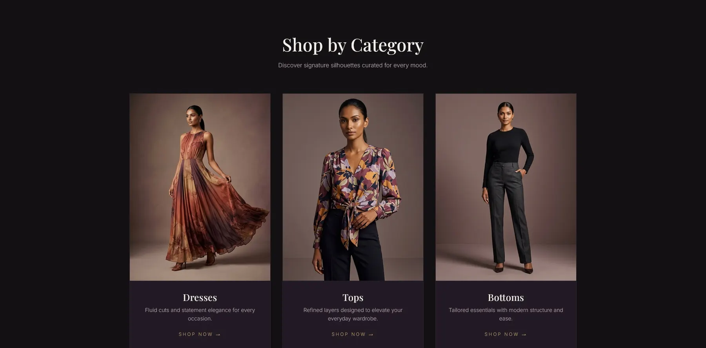
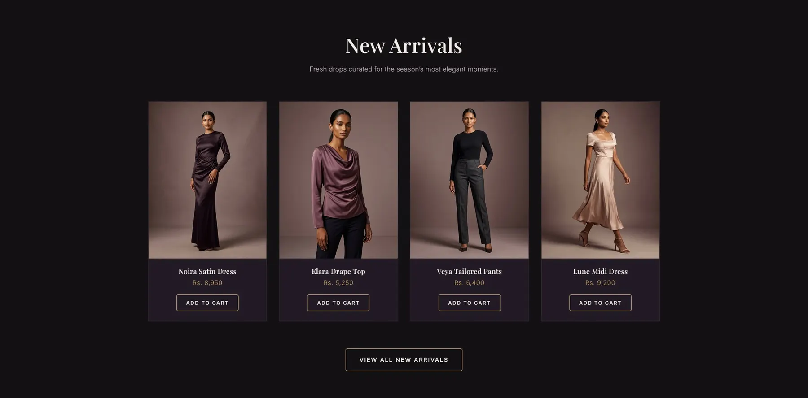
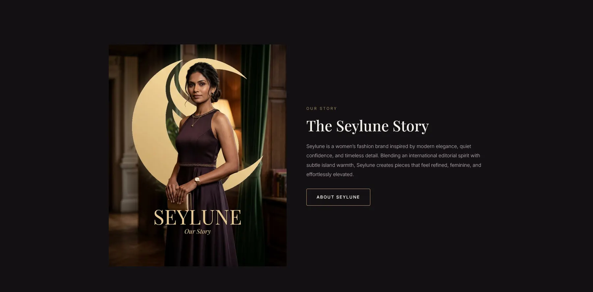
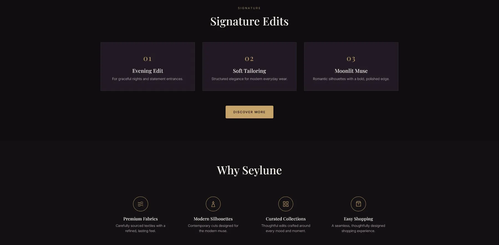
Fewer categories, more curated.
New Arrivals, Dresses, Tops and Bottoms keep the journey simple and the collection feeling limited. Search, cart and about make it a real storefront.
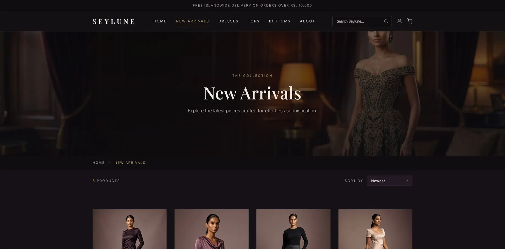
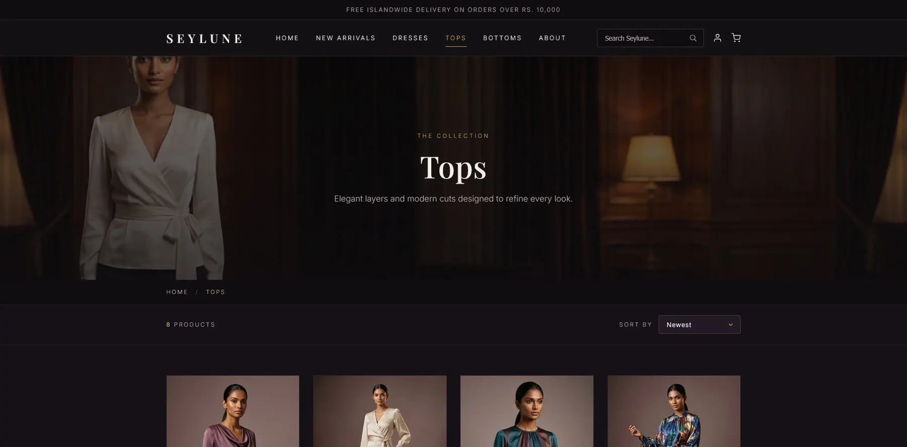
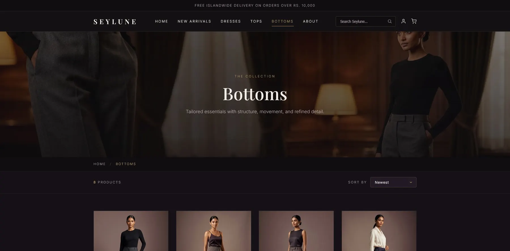
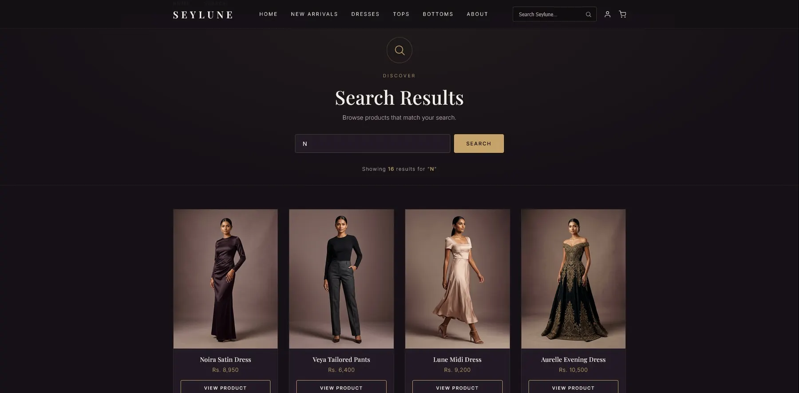
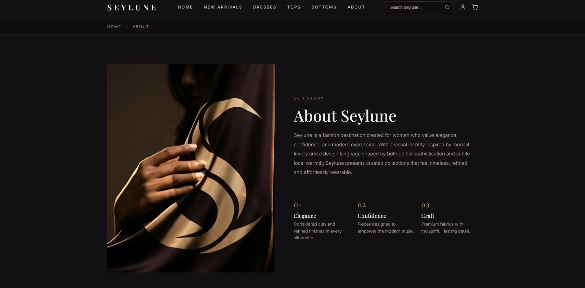
AI as an assistant, not a fake credit.
Claude helped generate and iterate frontend code; Gemini and Nano Banana generated model imagery. Direction, page decisions, structure, edits, judgement, assembly and polish were done by hand in VS Code.
HTML
Page structure, navigation, product sections, forms and content.
CSS
The luxury theme, responsive layout, spacing, type, grids and states.
JavaScript
The interactions the assignment required and shopping behaviour.
AI workflow
Claude for code iteration, Gemini and Nano Banana for visuals.
Seylune became more than a class website. It tested how fast a concept brand can become a structured, consistent, presentation-ready frontend.
Concept matters
Name, colour, categories, imagery and flow all follow one idea.
Limited feels premium
Fewer categories made shopping feel curated.
AI needs direction
Tools helped only because the mood and page plan were clear.
Next step
Backend cart, checkout, filtering, accessibility testing and a hosted demo.
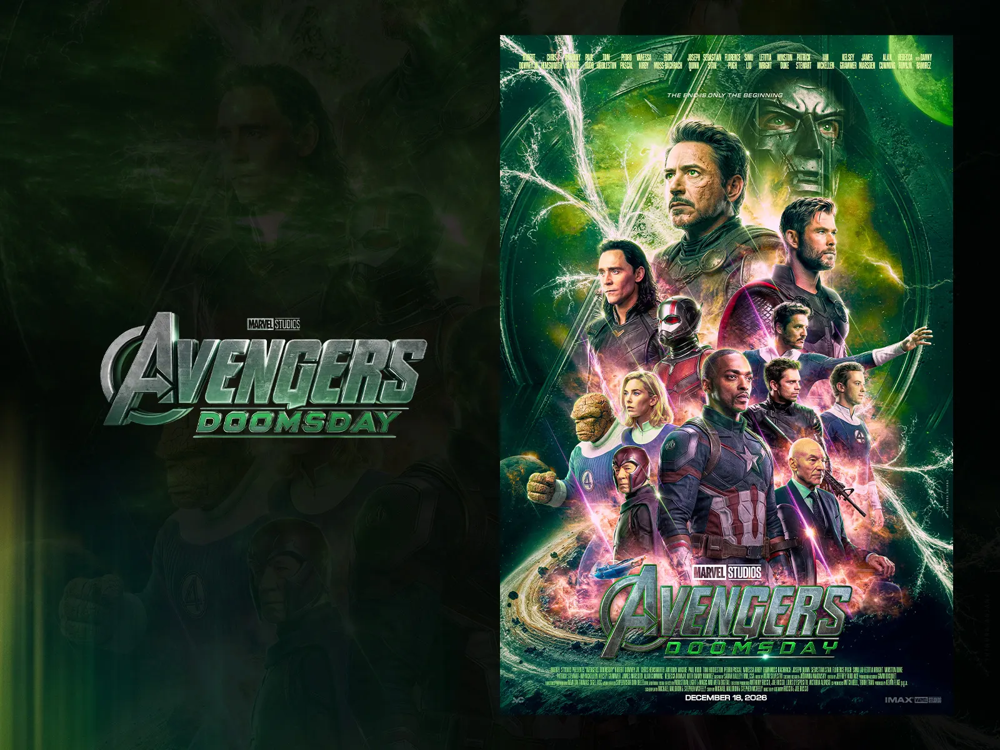